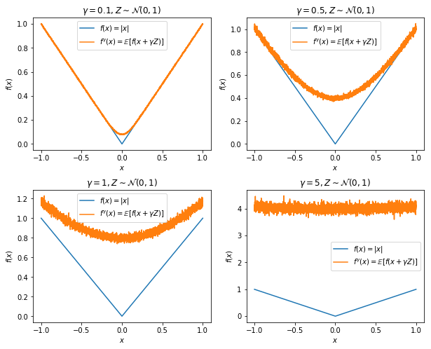

Randomized smoothing for stochastic optimization
作者是JC Duchi, PL Bartlett, MJ Wainwright，来自伯克利EECS系和统计学系，发表在SIAM Journal on Optimization, 2012上。
思路脉络
这是一篇非常长的文章，我并没有时间详细读完，以后遇到相关的工作可能会再读。文章完整版本托管在arXiv上。
这篇文章是纯粹的优化理论文章，给出了非光滑凸函数的随机优化方法的收敛速度。收敛速度的界刻画了收敛速度和随机梯度的方差之间的关系，并且证明是最优的。方差项的出现意味着在理论上我们能给出这样一个问题的答案：如果我们每个梯度估计使用更多的采样点（即更小的方差），收敛速度在理论上能上升多少？
为了解决非光滑的问题，文章采用了随机扰动平滑（Randomized Perturbation Smoothing）对原非光滑的函数进行近似，记原函数为为-Lipschitz连续，对，随机噪声，有函数
一定-Lipschitz光滑，意思是越小，近似效果越好，但是曲线的曲度就会越大。下面这个是近似的效果。

对光滑的函数来说，常见的一个bound是，没有涉及采样率。文章给出了一个error上界，其中一项是依赖于梯度估计误差的方差。
这篇文章有完整的smoothing方面性质的证明，以后或许有用。